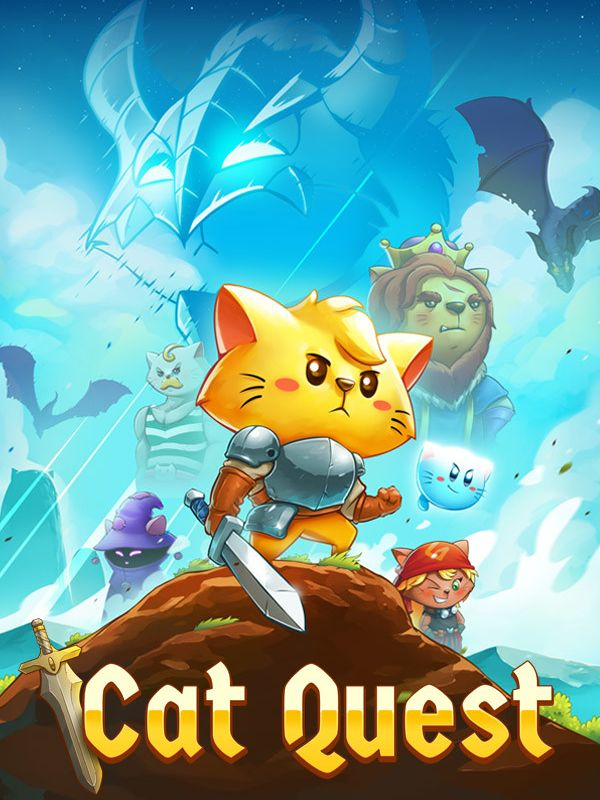

Cat Quest
Cat Quest
Details
|  | |
| Playtime | 1h 7m 0s |
| Last Activity | 23/07/2024 23:11:29 |
| Added | 16/09/2024 15:31:47 |
| Modified | 17/05/2025 23:34:07 |
| Completion Status | Played |
| Library | Steam |
| Source | Steam |
| Platform | PC (Windows) |
| Release Date | 08/08/2017 |
| Community Score | 72 |
| Critic Score | 83 |
| User Score | |
| Genre | Adventure Indie Role-playing (RPG) |
| Developer | The Gentlebros |
| Publisher | Kepler Interactive PQube The Gentlebros |
| Feature | Single Player |
| Links | Facebook Official Steam iPhone Android iPad GOG Wikia YouTube Twitch Discord Wikipedia Epic |
| Tag | 2D Action Action RPG Adventure Casual Cats Cozy Cute Dragons Family Friendly Fantasy Funny Hack and Slash Indie Loot Multiplayer Open World RPG Singleplayer Wholesome |
Description
Cat Quest is an open world RPG set in the pawsome world of cats!
Leap into a grand adventure in purrsuit of the evil Drakoth and your catnapped sister! Explore Felingard's huge overworld map, risk life and limb delving into dungeons for epic loot, and lend a paw to a furry cast of characters in a flurry of side quests.


Real-time Combat
Combat in Cat Quest takes place entirely in real time, allowing you to get close to enemies with a slash of your blade, dodge roll to avoid a counter-attack, and then finish them off with powerful magic! Wield the ancient spells of Lightnyan, Flamepurr, and Healpaw to vanquish your foes! (Fur real!)

Equipment Customization
Outfit your catventurer with a whole basket of equipment! Prefurr casting spells? Don an arcane hood, robes, and a staff to bolster your mana reserves! Want to protect yourself from attack? Deck out your catventurer with chainmail armor to increase your health and provide an extra level of protection. Weapons, armor, and spells can be mixed and matched to create the purrfect combinations for your playstyle!

World Exploration
The world of Felingard is littered with interesting places and people! Discover a possessed town whose residents lust for obscene amounts of meat, assist the mages Mewlin and Meowgan in their search to break a magic seal, and locate someone's missing delivery of "House of Parchments" and "The Pouncing Dead". Exploration is one of the main scratching posts of Cat Quest, and with locations such as Bermewda's Triangle, the Furbidden Fields, and Pawt City to explore, it's time to get pawing!
Soundtrack
Experience an enchanting orchestral score inspired by classic RPGs!
Leap into a grand adventure in purrsuit of the evil Drakoth and your catnapped sister! Explore Felingard's huge overworld map, risk life and limb delving into dungeons for epic loot, and lend a paw to a furry cast of characters in a flurry of side quests.
Real-time Combat
Combat in Cat Quest takes place entirely in real time, allowing you to get close to enemies with a slash of your blade, dodge roll to avoid a counter-attack, and then finish them off with powerful magic! Wield the ancient spells of Lightnyan, Flamepurr, and Healpaw to vanquish your foes! (Fur real!)
Equipment Customization
Outfit your catventurer with a whole basket of equipment! Prefurr casting spells? Don an arcane hood, robes, and a staff to bolster your mana reserves! Want to protect yourself from attack? Deck out your catventurer with chainmail armor to increase your health and provide an extra level of protection. Weapons, armor, and spells can be mixed and matched to create the purrfect combinations for your playstyle!
World Exploration
The world of Felingard is littered with interesting places and people! Discover a possessed town whose residents lust for obscene amounts of meat, assist the mages Mewlin and Meowgan in their search to break a magic seal, and locate someone's missing delivery of "House of Parchments" and "The Pouncing Dead". Exploration is one of the main scratching posts of Cat Quest, and with locations such as Bermewda's Triangle, the Furbidden Fields, and Pawt City to explore, it's time to get pawing!
Soundtrack
Experience an enchanting orchestral score inspired by classic RPGs!